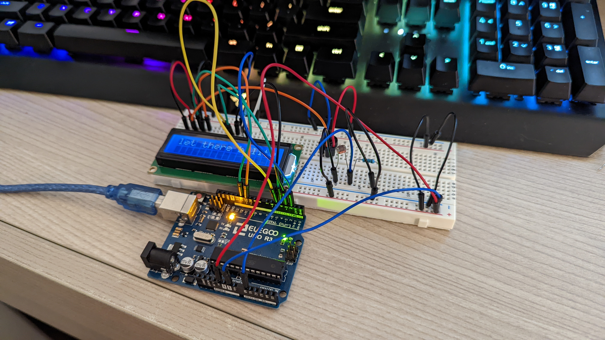
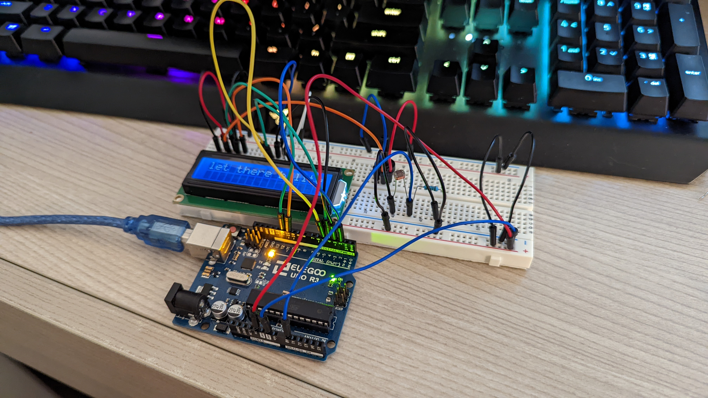
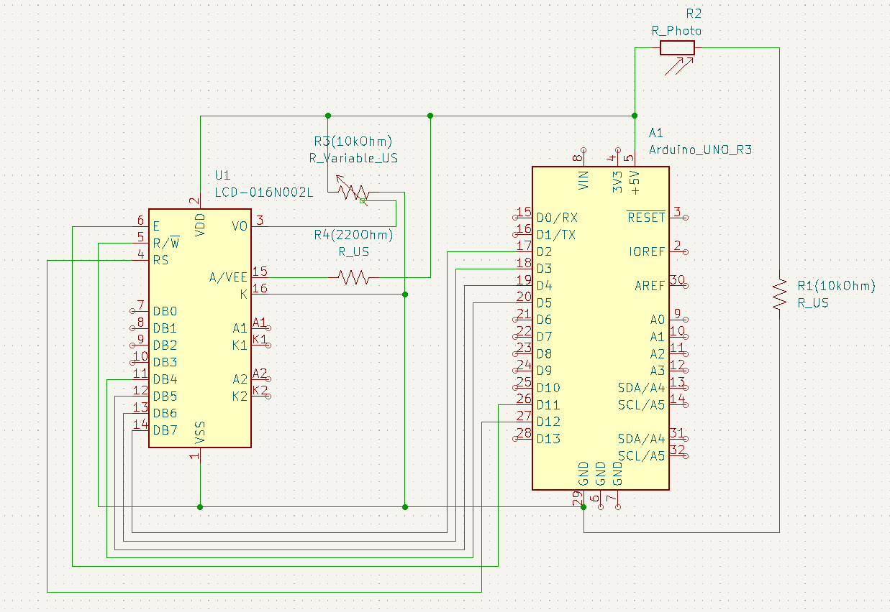
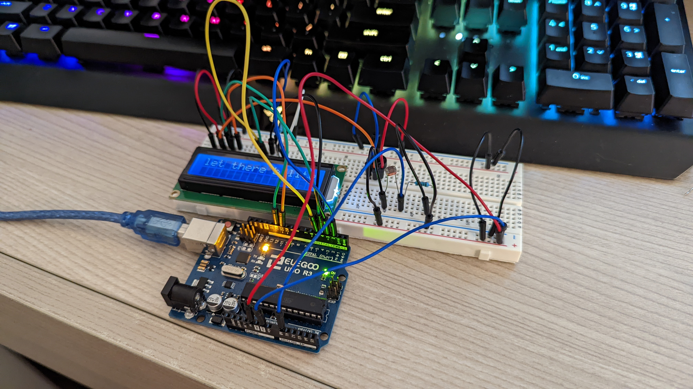

Final circuit result!
 


The circuit was powered with 5V through USB and I used the LCD screen, photoresistor, and potentiometer from our kits.
I used a 220 ohm resistor for the LCD screen and a 10K ohm resistor for the potentiometer and photoresistor. The
potentiometer controls the contrast ratio of the LCD display and the photoresistor controls the message on the screen.
#include
LiquidCrystal lcd(12, 11, 5, 4, 3, 2); //LCD display
//Variables
int value; // stores analog value from photoresistor
void setup(){
Serial.begin(9600); // begins monitoring
pinMode(photores, INPUT); // Set photores as input
lcd.begin(16, 2); // sets cursor at 16,2 on LCD display
lcd.print("let there b lite"); // initializes message
}
void loop(){
lcd.clear(); // clears display at the start of every loop in case analog val changes
value = analogRead(photores); // stores analog photores value
Serial.print("Analog value : "); //prints analog value
Serial.println(value);
// if no light reaches the photoresistor the LCD screen displays
// "DARKNESS", if not it goes back to original message
if (value == 0){
lcd.print("DARKNESS");
}
else{
lcd.print("let there b lite");
}
delay(500); //Small delay between loops
}
The firmware used to control the lights was programmed in Arduino! I initialized the pins as outputs and
the button as an input because it waits for a press to close the circuit. I programmed the LEDs to turn on
when the button is pressed, where they turn on one at a time (from left to right) and the RGB light fades
from red to green, creating a wave effect.
